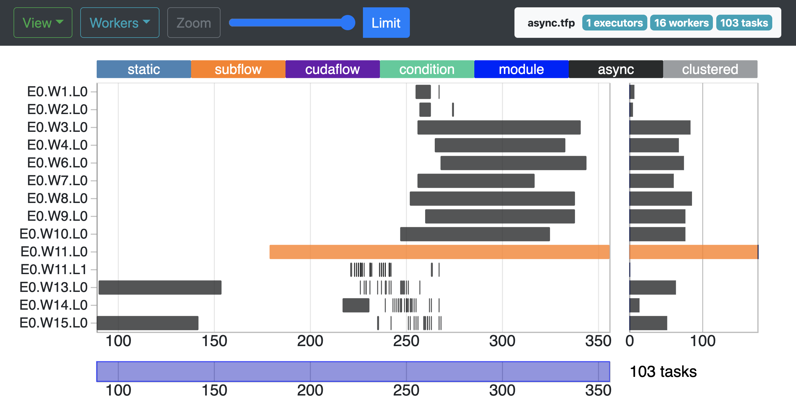

Taskflow comes with a built-in profiler, TFProf, for you to profile and visualize taskflow programs.

All taskflow programs come with a lightweight profiling module to observer worker activities in every executor. To enable the profiler, set the environment variable TF_ENABLE_PROFILER to a file name in which the profiling result will be stored.
When the program finishes, it generates and saves the profiling data to result.json in JavaScript Object Notation (JSON) format. You can then paste the JSON data to our web-based interface, Taskflow Profiler, to visualize the execution timelines of tasks and workers. The web interface supports the following features:
TFProf implements a clustering-based algorithm to efficiently visualize tasks and their execution timelines in a browser. Without losing much visual accuracy, each clustered task indicates a group of adjacent tasks clustered by the algorithm, and you can zoom in to see these tasks.
When profiling large taskflow programs, the method in the previous section may not work because of the limitation of processing large JSON files. For example, a taskflow program of a million tasks can produce several GBs of profiling data, and the profile may respond to your requests very slowly. To solve this problem, we have implemented a C++-based http server optimized for our profiling data. To compile the server, enable the cmake option TF_BUILD_PROFILER. You may visit Building and Installing to understand Taskflow's build environment.
After successfully compiling the server, you can find the executable at tfprof/server/tfprof. Now, generate profiling data from running a taskflow program but specify the output file with extension .tfp.
Launch the server program tfprof/server/tfprof and pass (1) the directory of index.html (default at tfprof/) via the option --mount and (2) the my_taskflow.tfp via the option --input.
Now, open your favorite browser at localhost:8080 to visualize and profile your my_taskflow program.

The compiled profiler is a more powerful version than the pure JavaScript-based interface and it is able to more efficiently handle large profiling data under different queries. We currently support the following two view types:
You can display a profile summary by specifying only the environment variable TF_ENABLE_PROFILER without any value. The Taskflow will generate a separate summary report of tasks and workers for each executor created by the program.
The report consists of two sections, task summary and worker summary. In the first section, the summary reports for each task type the number of executions (Count), the total execution time (Time), average execution time per task (Avg), and the minimum (Min) and the maximum (Max) execution time among all tasks. Similarly in the second section, the summary reports for each worker the task execution statistics.